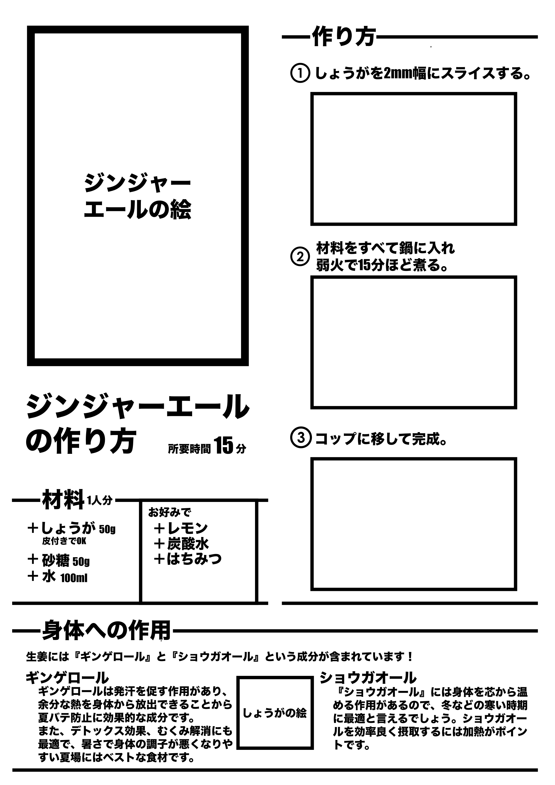

DRINK RECIPE

使用ソフト
illustrator / Photoshop / MediBangPaintPro
制作時期
2024.1
制作背景
大学２年生の頃に受講していた上平先生の「グラフィックデザイン」という授業内で制作した。実際に作ってみたくなるようなレシピを意識して制作した。画像は手書きのみ使用できたため、液タブを用いて絵を描いた。液タブの難しさに苦戦しながらも、楽しみながら制作することができた。

この図はDrink Recipeの課題に取り組む前に制作した構成案だ。実際に作ってみたくなるようなレシピにするため、完成図を左上に大きく配置した。
また、作り方の手順ごとに画像を用意して、初心者でも簡単に制作できるようなレシピを目指した。しかし、手順ごとに画像を用意すると、初心者への丁寧さのあまり画面全体の情報量が多くなり、かえって小難しい印象を与えてしまうと判断し、最終的には簡潔な文字のみの簡潔な「作り方」にした。
料理をあまりしない初心者はまずレシピの何を見て制作するのだろうか。私なりに考えた結果、「初心者の私でも作れそう」であることが大事だと思い至った。そのため、レシピの右上に制作難易度と所要時間を配置した。そこにカロリーも載せることで、作ってみるきっかけになると考えた。
また、このDrink Recipeを制作する上で意識したことが２つある。それは、「楽しさ」と「温かさ」だ。このジンジャーエールを作ってみたいという楽しそうな印象と、これを飲んだら元気になれそうな温かい印象が与えられるようなレシピを作ろうとした。ジンジャーエールの材料の絵を散り散りに配置し、遊びのある書体も用いることで、「楽しさ」を表現した。また、クレヨンや色鉛筆で手書きしたようなデザインを採用したことで、人の手による「温かさ」も表現できたと思う。